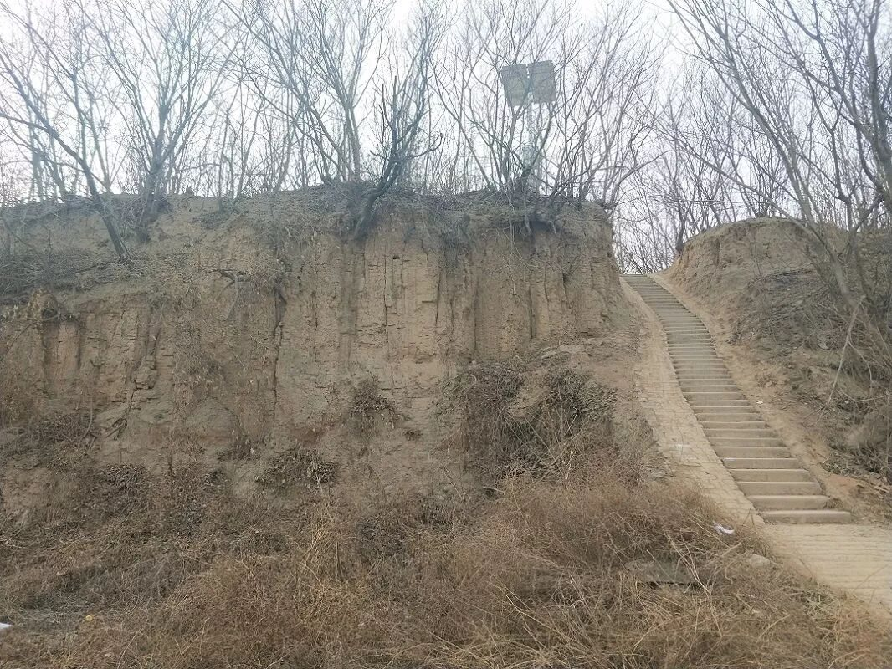
ARCHIVE / 推文归档
把路，
写成文字。
公众号「行者无疆实践团」的历史推文完整归档。支持按期次、栏目、关键词检索；每篇推文均保留原文排版与原始链接。
实践纪实
301 篇
每日行程、走访与现场观察。路线、见闻、对话都在这里。
ON THE ROAD
【行者无疆·文韵皖南】赴徽州，寻笔墨灯影里旧年山河
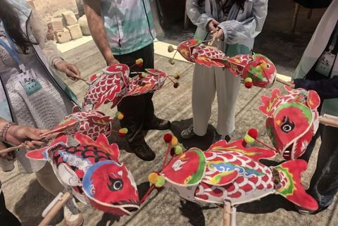
【行者无疆·文韵皖南】行者寻灯，篾扎游鱼载岁华

【行者无疆·文韵皖南】素笺藏韵，纤毫落笔续书香
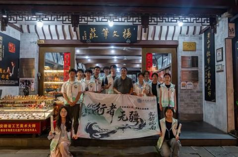
【行者无疆·文韵皖南】行者观墨，探览古城续文脉
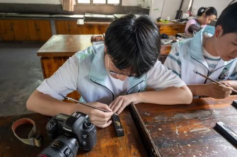
【行者无疆·文韵皖南】行者问石，镌刀篆刻千秋岁
【行者无疆·文韵皖南】行者落徽州，一手烟雨一手酥
【行者无疆·渝见非遗】寻访匠心：在重庆，触摸非遗的呼吸与心跳
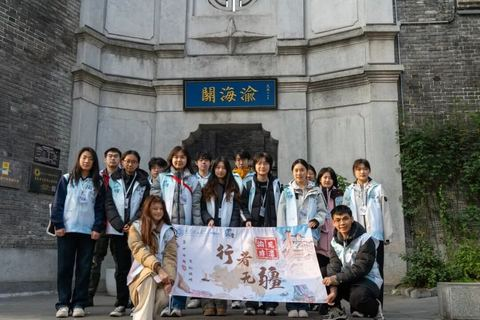
【行者无疆·渝见非遗】荣昌访扇：对话传承人，解锁指尖上的千年匠心
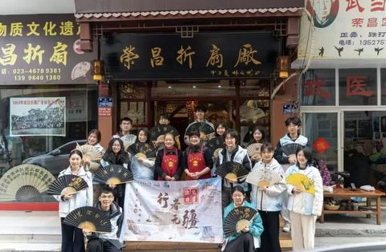
【行者无疆·渝见非遗】问道巴渝艺魂，传薪时代精神
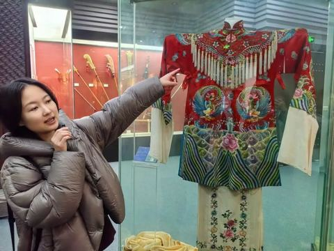
【行者无疆·渝见非遗】寻根重庆母城，探路非遗未来
津沽探骊行者路 ，非遗无疆化韵长
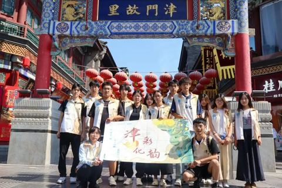
【行者无疆·津彩化韵】彩纸裁鸢牵匠魂 行者终程载韵归
【行者无疆·津彩化韵】年画溯古承新韵，葫芦烙彩续匠心
【行者无疆·津彩化韵】古色津街访民意，木版年画悟匠心
【行者无疆·津彩化韵】津门探韵寻真意，泥艺传薪续古风
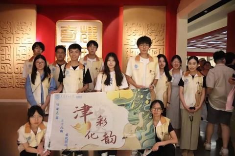
津门遗韵待行寻，行者聚首启新程
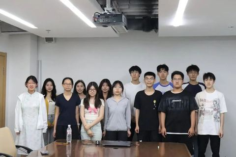
非遗旧梦，启航新章
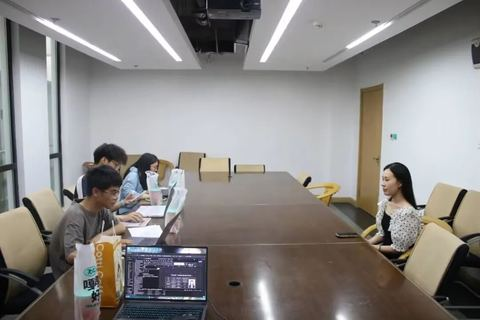
【行者无疆·秦育遗韵】行者逐光秦韵里，非遗探寻路无疆
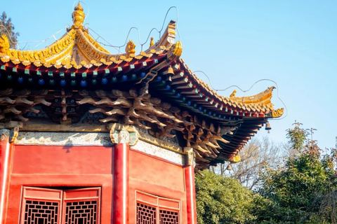
【行者无疆∙秦育遗韵】古都践梦秦腔畔，行者赓续非遗魂
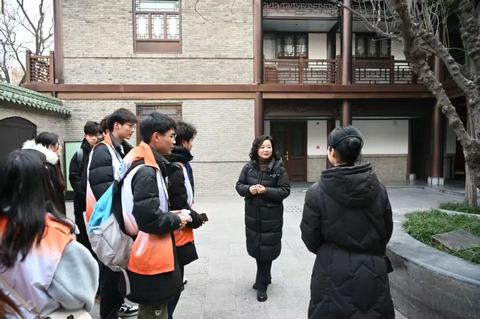
【行者无疆·秦育遗韵】聆听鼓乐遗音，邂逅心灵暖阳
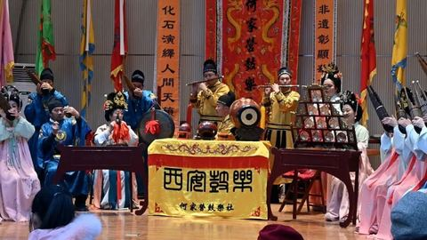
【行者无疆∙秦育遗韵】于纸浆间悟传承，自麻缕处继文明
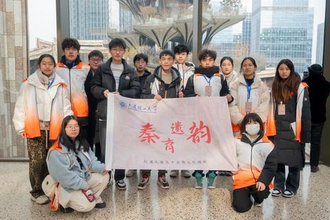
【行者无疆·秦育遗韵】三秦大地，探源非遗遗珠
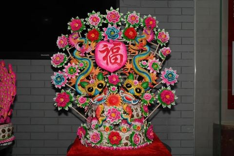
【行者无疆∙秦韵遗风】继古风墨拓碑林，传雅乐影动高院
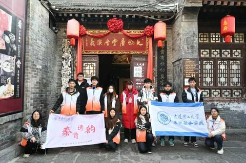
梦逐非遗韵，聚散绘星芒
【行者无疆·豫旅拾遗】唐彩流光映古韵， 匠心独运话千年
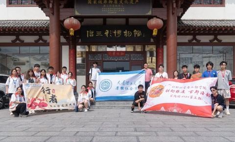
【行者无疆·豫旅拾遗】文化馆内寻洛阳古韵，明堂之上仰天堂华章
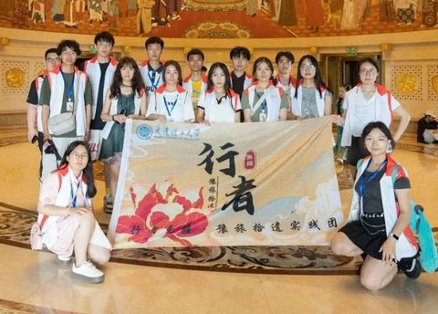
【行者无疆·豫旅拾遗】洛阳城里见秋风，龙门石窟映月容
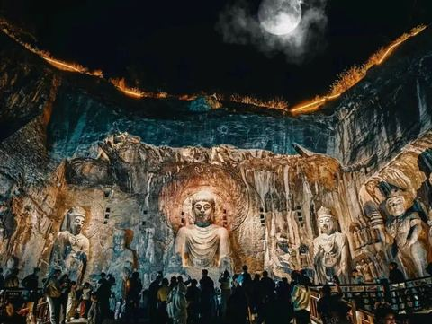
【行者无疆·豫旅拾遗】寻迹汴京灯笼张，博物馆中游汴梁
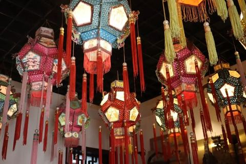
【行者无疆·豫旅拾遗】木版年画传承韵，清明上河游古今
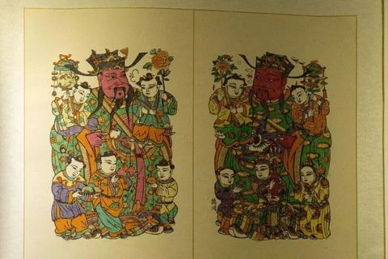
寻溯齐鲁 纸艺风情
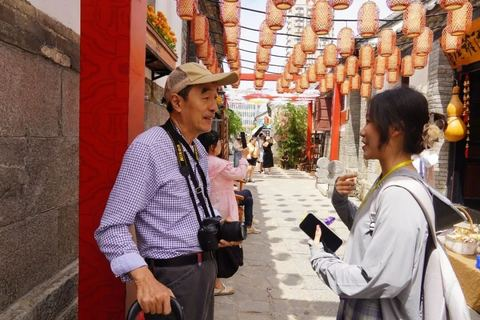
废纸残卷，探秘无形之相
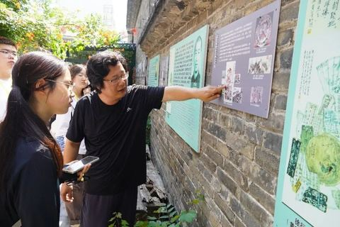
素纸承新生，刀刻定乾坤

杨家埠寻风筝记忆，木纸鸢续匠心情韵

剪纸韵悠长，纸鸢赋云帆
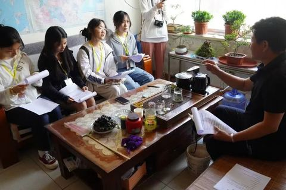
所城里访烟台剪纸，手造馆赏工匠作品
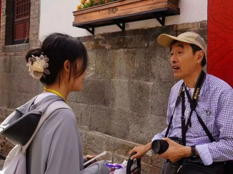
绿水青山 冰天雪地
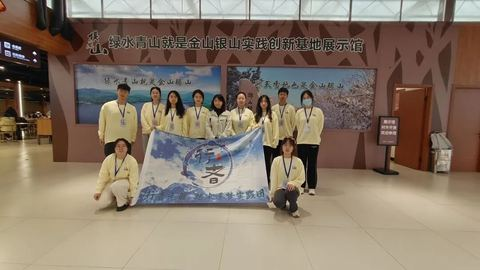
共赴冰雪之约，拥抱冬奥文化
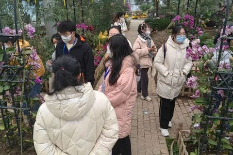
执画笔，绘盛世
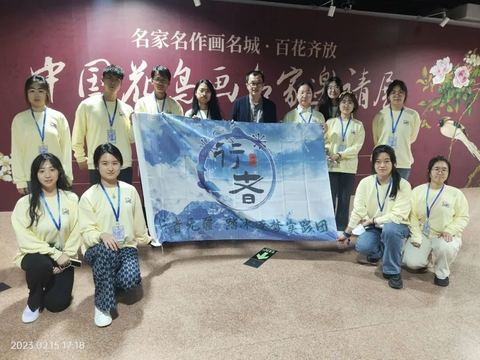
故宫之旅，相见冰雪
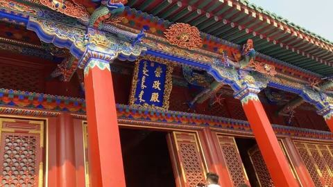
镜头外的冬奥大工——志愿者裁判专访
服务冬奥，勇敢追梦
邂逅冬奥，共创未来
走近工匠故事，品味冰雪气韵
行者无疆·踏冰逐梦 | 我们来啦！
【写意江南】勾留烟雨 智汇杭城
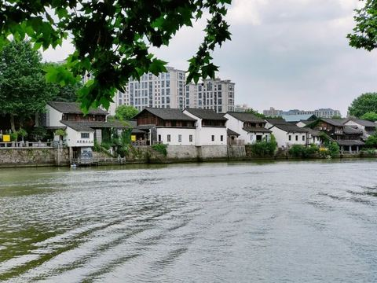
至此，苏杭
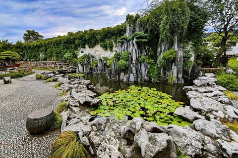
【写意江南】闤里姑苏 群贤毕集
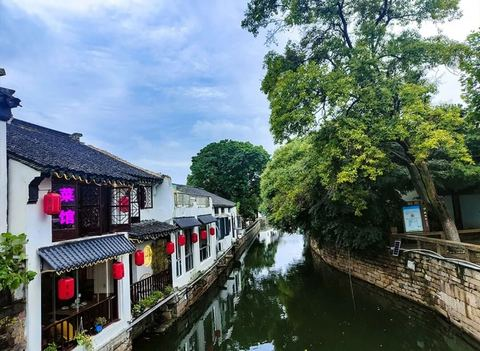
诗意苏州行
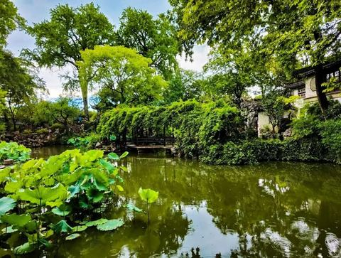
同程行 书店客
秀美苏杭六月天
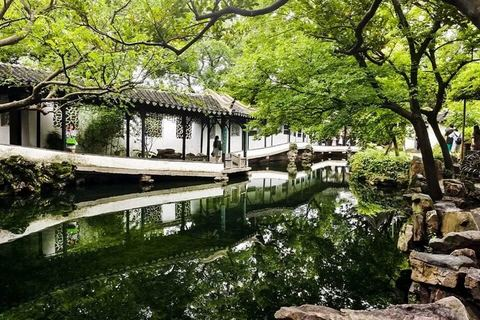
最忆是杭州
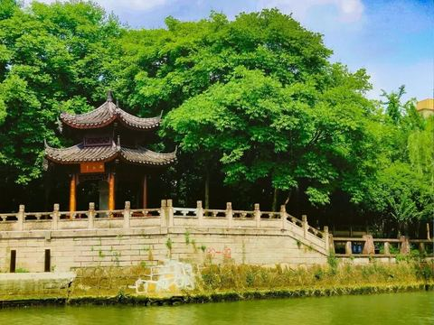
科技激活未来，文物复现历史
【行者无疆·流眄苏杭】行者篇
匆匆赶路，慢慢品味
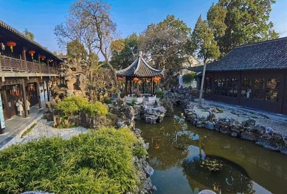
文以载道，旅以致远
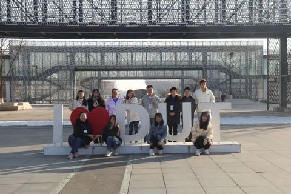
灵魂不羁，脚步不止
少年驰骋，仗剑天涯
我行其野，芃芃其麦
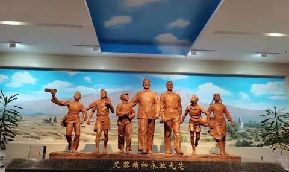
行者有思，文化有灵
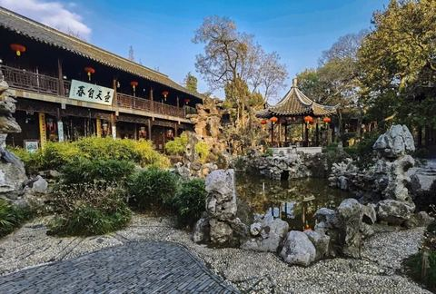
十期初会，且共奔涌
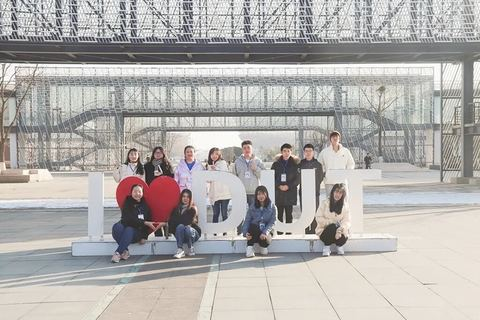
行者有志，前路无疆
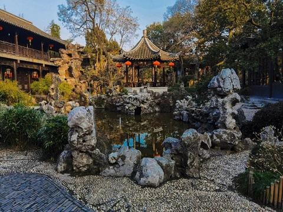
行者驰千里，思域扩无疆
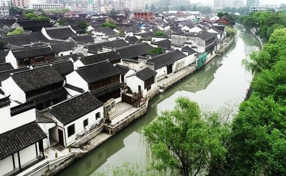
人生天地间，忽如远行客
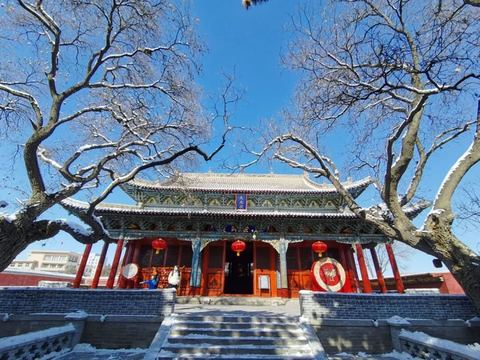
山水总相逢
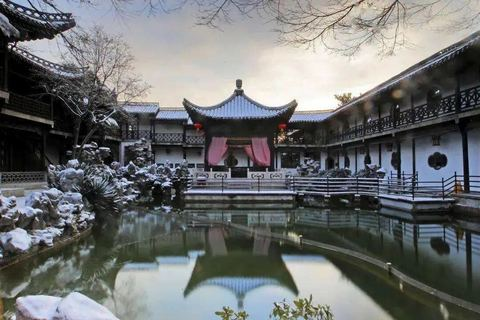
行无疆旅途，阅三省历史，续前行辉煌
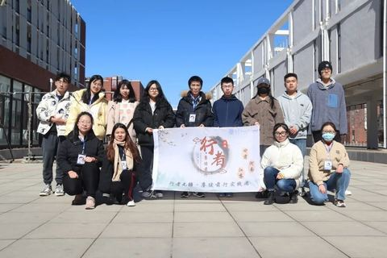
岁月静好，山水有情
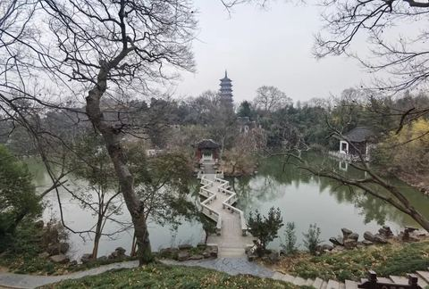
行者，且赶路
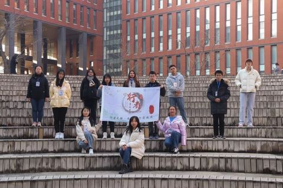
读万卷书，行万里路
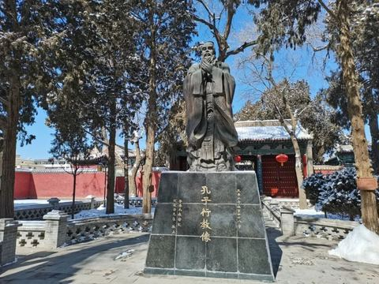
塞上江南寄年华 千年风华蕴黄沙
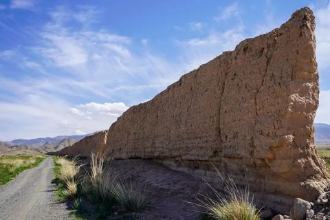
黄土沉沙 瓷梦千年
品悟商客大道，领略文人风华
青砖黛瓦下 深厚底蕴藏
湖光潋滟入梦，人间烟火慰心
【行者无疆·赓续前行】行者篇
【行者无疆 寓绻淮扬】行醉淮扬许无疆
【徜扬恣肆·十七】寓绻淮扬，一梦扬州
【徜扬恣肆·十六】挽一樽清月，待万程流光
【徜扬恣肆·十五】江南如画，扬州令我向往
【徜扬恣肆·十四】一场文化旅行
【徜扬恣肆·十三】不识庐山真面目，只缘身在此山中
【徜扬恣肆·十二】天地万物本无趣，只因有人便生情
【徜扬恣肆·十一】看一眼人间烟火，淡一抹人生起落
【徜扬恣肆·十】七月流火心赤诚，文研趣途远有期
【徜扬恣肆·九】岁月不败，淮扬静好
【徜扬恣肆·八】烟花三月下扬州
【徜扬恣肆·七】墨香浸润扬州月，飞花漫舞寒冬天
【徜扬恣肆·五】春风十里扬州路，卷上珠帘总不如
【徜扬恣肆·六】蝉鸣绘夏图，行者醉扬州
【徜扬恣肆·四】天下三分明月夜，二分无赖是扬州
【徜扬恣肆·三】沿途的风景比终点更精彩
【徜扬恣肆·二】仙游四方，扬州梦好
【徜扬恣肆·一】跃入人海，做一朵奔涌的浪花
【行者无疆 寓绻淮扬】 谈笑有鸿儒，侃侃论八怪
【行者无疆 寓绻淮扬】 绿树城郭，一梦千年
【行者无疆 寓绻淮扬】 盛一叶文化之韵，赠予运河
【行者无疆 寓绻淮扬】江南风情好，美食清如诗
【行者无疆 寓绻淮扬】 非遗文化
【行者无疆 寓绻淮扬】 行者篇
【行者无疆 寓绻淮扬】相识
【煌然成篇·十五】静听驼铃响，心触赤子怀

【煌然成篇·十四】情不知所起，大梦敦煌

【煌然成篇·十三】敦煌——千年守望

【煌然成篇·十二】一座玉门关，半部河西史
【煌然成篇·十一】始于敦煌，忠于文化
【煌然成篇·十】行者，在路上
【煌然成篇·九】鲜衣怒马，且行且歌
【煌然成篇·八】敦煌梦远 丝路情长
【煌然成篇·七】远方，不熄的梦想
【煌然成篇·六】行者路漫
【煌然成篇·五】大漠尽头是你
【煌然成篇·四】怀着热忱，踏浪而行
【煌然成篇·三】最幸运的幸运
【煌然成篇·二】遇见，即是上上签
【煌然成篇·一】始于行者，不止于疆
敦煌沙洲，行者有感
【行者无疆 聆谂丝韵】千年一觉，大梦敦煌
我心所爱皆敦煌
【行者无疆•聆谂丝韵】平凡是你，伟大亦你
【行者无疆 聆谂丝韵】缘在敦煌
【行者无疆 聆谂丝韵】无关迟暮，不问翻覆
你来时冬至，肩上是风
【行者无疆 言念潇湘】春暖花再开，行者酱待你归来。

【赋墨沉湘·十九】唤取骑鲸客，挝鼓过银山。

【赋墨沉湘·十八】我为你做的，远不及你所赠予我的。
【赋墨沉湘·十七】弦歌闻雅意
【赋墨沉湘·十六】一念起，自此相聚成缘。
【赋墨沉湘·十五】愿世间美好，都与你们环环相扣
【赋墨沉湘·十四】心之所向，素履以往。
【赋墨沉湘·十三】星火滚烫，你是人间理想。
【赋墨沉湘·十二】以为是初遇，其实是久别重逢
【赋墨沉湘·十一】我希望你被阅读，不被辜负。
【赋墨沉湘·十】虚步漫行，步履不停。
【赋墨沉湘·九】文化苦旅观千百，纵览底蕴于一心
【赋墨沉湘·八】寒冬，湖湘，行者。
【赋墨沉湘·七】每一次扬帆，迎一场挑战。
【赋墨沉湘·六】人间有味是清欢
【赋墨沉湘·五】我从远方赶来，赴你一面之约。
【赋墨沉湘·四】风浪没平息，是行者的意义。
【赋墨沉湘·三】为你们，我愿行千千万万。
【赋墨沉湘·二】你是我来生胸前的记号
【赋墨沉湘·一】沅芷湘兰，相见恨晚。
【行者无疆 言念潇湘】我言湘魂系苍生
【行者无疆 言念潇湘】乾坤布热血 肝胆照昆仑
【行者无疆 言念潇湘】持简访贾园 枕月规星城
【行者无疆 言念潇湘】知一方人，爱一座城。
【行者无疆 言念潇湘】铜窑瓷韵遗靖港 金丝剪彩秀望城
【行者无疆 言念潇湘】启程篇
如果再看你一眼，是否还会有感觉！
致 【行者无疆 源洄渝州】

【渝传尺素•十九】吾将上下而求索

【渝传尺素•十八】重庆重庆

【渝传尺素•十七】乘兴而来，满载而归。
【渝传尺素·十六】我的心，满是露水的七月重庆
【渝传尺素•十五】这一世，我转山转水转佛塔，只为途中与你相遇
【渝传尺素•十四】乘兴而来，满载而归
【渝传尺素•十三】一山一渝州，一步一行者
【行者无疆·源洄渝州】重庆历史名人馆、巴渝民俗村专访特辑
【渝传尺素•十二】和南唱喏，道声好久不见
【渝传尺素•十一】你眼中有星海浩渺，山河千里
【渝传尺素•十】感谢相伴，不负遇见
【渝传尺素•九】你带领着我穿透了渝州
【渝传尺素•八】我曾踏月而来，只因你在山中
【渝传尺素·七】重庆，我的秒速五厘米
【渝传尺素·六】愿你如夏花之绚烂
【渝传尺素·五】以诚意叩开山城文化之门
【渝传尺素·四】你是我的可遇不可求
【渝传尺素·三】 你我是7月奔跑的太阳
【渝传尺素·二】行千里方可致远大
【渝传尺素·一】如果可以，我想再爱你三千遍
【行者无疆 源洄渝州】执素笔结行程，行千里致广大
【行者无疆 源洄渝州】礼堂巍巍蜀绣悬
【行者无疆 源洄渝州】厚植于史 情动于天
【行者无疆 源洄渝州】虎穴英华铸忠魂
【行者无疆·源洄渝州】巴俗川腔 夜品醇香
【行者无疆·源洄渝州】初遇渝州
【行者无疆·源洄渝州】重庆十二时辰？这样的行者十二时辰，你喜欢吗？
【行者无疆·源洄渝州】三期行者课堂结课了！
震惊！一群老行者在深夜里聊起这种话题...
校园倡议丨振臂高呼，护文物于微时

白茶清欢无别事，我在等风也等你

【秦简拓语·十九】在挫折中砥砺前行
【秦简拓语·十八】简入繁出，追本溯源
【秦简拓语·十七】调研是最浪漫的喜悦
【秦简拓语·十六】以史为径，踏古寻芳
【秦简拓语·十五】古今多少事，都付笑谈中
【秦简拓语·十四】且听风吟，且行无疆
【秦简拓语·十三】确认过眼神，是一次值得回味的实践经历
【秦简拓语·十二】这是一次很特别的告白-致行者无疆
【秦简拓语·十一】历史长河滚滚向前，永不停息
【秦简拓语·十】与城市文化共情，执历史古迹通感
【秦简拓语·九】要么读书，要么旅行，身体和灵魂总有一个在路上
【秦简拓语·八】踏上一段苦旅，沉淀一段思考
【秦简拓语·七】行万里路是最好的成长
【秦简拓语·六】相遇行者无疆、相遇长安
【秦简拓语 · 五】行在西安
【秦简拓语 · 四】烛火照明，泥步修行
【秦简拓语·三】心里想的就该努力前去尝试
【秦简拓语 · 二】浅谈西安文物古迹保护
【秦简拓语 · 一】别来无恙，你在心上
【行者无疆 · 韶忆长安】 两帝一陵一世界，三山一景一美人
【行者无疆·韶忆长安】七层雁塔 千年彩陶
【行者无疆 · 韶忆长安】 兵谏华清-秦俑怀古
【行者无疆·韶忆长安】 梦回大唐
【行者无疆·韶忆长安】一眼千年是古都，追秦溯唐沐清风
【行者无疆 · 韶忆长安】 西安丨一眼望千年
【行者无疆·韶忆长安】 首日小计
【行者无疆·韶忆长安】启程篇
【行者无疆——探寻长安】
【行者无疆——谈笑数遗风】
【行者无疆——邂逅长安】
【行者无疆·韶忆长安】 行者篇
【素笺寄情·十五】不“遗”憾，不“遗”忘

【素笺寄情·十四】盛夏，遇见醉美徽路

【素笺寄情·十三】纸短情长

【素笺寄情·十二】非吾讷于书华章，简言相送便真情
【素笺寄情·十一】拥抱行者，体味文化
【素笺寄情·十】行在路上，行有所思
【素笺寄情·九】漫漫非遗路，切切行者情
【素笺寄情·八】未来可期
【素笺寄情·七】一溪水墨一城韵，一山风致一路情
【素笺寄情·六】非遗世无双 梦回徽州情
【素笺寄情·五】一生痴绝处 无梦亦无憾
【素笺寄情·四】相遇即是下一次的开始
【素笺寄情·三】八月是行者的
【素笺寄情·二】传文化之美，承行者之路
【素笺寄情·一】梦里漫徽途
【行者无疆·拾遗皖徽】徽笔挥挥结行程，皖徽点点忆永恒
【行者无疆·拾遗皖徽】访大国工匠，品砖雕精魂
【行者无疆·拾遗皖徽】了解宣纸，走进宣纸文化园
【行者无疆·拾遗皖徽】 “画里乡村”——宏村之旅
【行者无疆·拾遗皖徽】 探寻安徽省博物馆
【行者无疆·拾遗皖徽】 近非遗园，入佳境终有所得
【行者无疆·拾遗皖徽】洇出一幅山水，沉淀下一座徽州
《昆声谐律，雅正之音》——行者无疆文化调研

【行者故事屋·十九】金陵城畔，姑苏区旁，可曾有梦中的模样
【行者故事屋·十八】行者，我们在路上
【行者故事屋·十七】古韵之城&水墨江南
【行者故事屋·十六】一场不负遇见的吴越之旅
【行者故事屋·十五】惊觉相思不露，原来只因已入骨
【行者故事屋·十四】修林散步屧，古木通幽径
【行者故事屋·十三】苏A，苏E
【行者故事屋·十二】金陵访故地，姑苏枕梦河
【行者故事屋·十一】情不知所起，一往而深
【行者故事屋·十】幸而相会，从一到十九
【行者故事屋·九 】忆江南
【行者故事屋·八 】冬日说“吴”，南下览“越”
【行者故事屋·七】最美的故事，就在吴越
【行者故事屋·六】行者无疆• 让我再看你一遍，从南到北
【行者故事屋·五】当南京的繁华撞上苏州的悠闲
【行者故事屋·四】心留古迹，且行且忆
【行者故事屋·三】今生今世，相遇为缘
【行者无疆·致旅吴越】路尽而任道远，曲终而人不散
【行者故事屋·二】金陵城中过，姑苏寺外行
【行者故事屋·一】行而有思，观而有得
【行者无疆·致旅吴越】不出城廓而获山林之趣
【行者无疆·致旅吴越】美若案头清供，胜似苦寒山水
【行者无疆·致旅吴越】心怀古迹，邂逅南京
【行者无疆·致旅吴越】踏访南京博物院
【行者无疆·致旅吴越】钟山古韵幽，孝陵渠为首
【行者无疆·致旅吴越】启程篇！
【行者无疆·致旅吴越】行者篇！
【行者明信片·拾贰·行者无疆，永不止步】

【行者明信片·拾壹·仁者无敌，行者无疆】
【行者明信片·拾·穿越时空，豫见文化】
【行者明信片·玖·行者无疆——不止于足，不限于界】
【行者无疆·捌·文化无疆，情谊无疆】
【行者无疆·柒·文化虽苦旅，行者却无疆】
【行者明信片·陆·文化苦旅，其实是一种修行】
【行者明信片·伍·我眼中的文化】
【行者明信片·肆·前路无涯，行者天下】
【行者明信片·叁·不平凡的行者，不平凡的路】
【行者明信片·贰·匆匆山水行，殷殷游子情】
【行者明信片·壹·体历文化，行者无疆】
行者无疆#尾声#——洛阳行
行者无疆#间奏#——登封行
行者无疆#间奏#起航——安阳
行者无疆#间奏#——初至
行者无疆#前奏#
“行者无疆河南行”成员介绍篇
来自行者的第十七封信|从零到一，从一还是到一
来自行者的第十六封信|体历文化，行者无疆
来自行者的第十五封信|惑之不解
来自行者的第十四封信|相识在齐鲁
来自行者的第十三封信|文化寓于生活
来自行者的第十二封信|文物的保护与修复
来自行者的第十一封信|“三孔”漫笔
来自行者的第十封信|他，承载着齐鲁文化
来自行者的第九封信|山东之行
来自行者的第八封信|山东文化之旅
来自行者的第七封信|印象之城
来自行者无疆的第六封信|随笔
来自行者的第五封信|体悟齐鲁文化
来自行者的第四封信|凝固的艺术——古建筑
来自行者的第三封信|传承
来自行者的第二封信|匆匆山水行，殷殷游子情
来自行者的第一封信|远行
行者无疆|永不止步——曲阜
行者无疆|永不止步——曲阜
行者无疆|再出发——泰安
行者无疆|起航——济南
行者无疆|起航——济南
实践感悟
52 篇
队员的个人复盘，署名发表。行者的名字多半出现在这一栏。
SIGNED PIECES
【行者无疆·文韵皖南】个人实践感悟——汪雨姗

【行者无疆·文韵皖南】个人实践感悟——郭周航
【行者无疆·文韵皖南】个人实践感悟——仲禹潼

【行者无疆·文韵皖南】个人实践感悟——朱近赤
【行者无疆·文韵皖南】个人实践感悟——梁棋鑫
【行者无疆·文韵皖南】个人实践感悟——刘锦程
【行者无疆·文韵皖南】个人实践感悟——袁婉若
【行者无疆·文韵皖南】个人实践感悟——原羽佳
【行者无疆·文韵皖南】个人实践感悟——童思嘉
【行者无疆·文韵皖南】个人实践感悟——袁婵
【行者无疆·文韵皖南】个人实践感悟——闫磊
【行者无疆·文韵皖南】个人实践感悟——齐子涵
【行者无疆·渝见非遗】个人实践感悟——周子斐
【行者无疆·渝见非遗】个人实践感悟——尹竞翎

【行者无疆·渝见非遗】个人实践感悟——袁婉若

【行者无疆·渝见非遗】个人实践感悟—钟雨何
【行者无疆·渝见非遗】个人实践感悟—黄新舒
【行者无疆·渝见非遗】个人实践感悟—齐子涵
【行者无疆·渝见非遗】个人实践感悟——周星焱
【行者无疆·渝见非遗】个人实践感悟——朱近赤
【行者无疆·渝见非遗】个人实践感悟——梁棋鑫
【行者无疆·渝见非遗】个人实践感悟——童思嘉
【行者无疆·渝见非遗】个人实践感悟——刘辰锡
【行者无疆·渝见非遗】个人实践感悟——李凌志
【行者无疆·渝见非遗】个人实践感悟——闫磊

【行者无疆·津彩化韵】个人实践感悟——周子斐
【行者无疆·津彩化韵】个人实践感悟——肖盛强
【行者无疆·津彩化韵】个人实践感悟——袁婉若
【行者无疆·津彩化韵】个人实践感悟——唐子涵
【行者无疆·津彩化韵】个人实践感悟——姜骅洲
行者无疆·津彩化韵】个人实践感悟——张圣铭
【行者无疆·津彩化韵】个人实践感悟——杩健辉
【行者无疆·津彩化韵】个人实践感悟——段发萍
【行者无疆·津彩化韵】个人实践感悟——齐子涵
【行者无疆·津彩化韵】个人实践感悟——史子鸣
【行者无疆·津彩化韵】个人实践感悟——张瑶琪
【行者无疆·津彩化韵】个人实践感悟——韩可欣
【行者无疆·秦育遗韵】个人实践感悟——秦简宜
【行者无疆·秦育遗韵】个人实践感悟——邓雪
【行者无疆·秦育遗韵】个人实践感悟——邢允辅
【行者无疆·秦育遗韵】个人实践感悟——张涵瑜
【行者无疆·秦育遗韵】个人实践感悟——张皓一
【行者无疆·秦育遗韵】个人实践感悟——王子翔
【行者无疆·秦育遗韵】个人实践感悟——尹继萱
【行者无疆·秦育遗韵】个人实践感悟——梁棋鑫
【行者无疆·秦育遗韵】个人实践感悟——樊星烁
【行者无疆·秦育遗韵】个人实践感悟——李麟凤
【行者无疆·秦育遗韵】个人实践感悟——范伊诺
【行者无疆·秦育遗韵】个人实践感悟——郑瑞瑄
【行者无疆·秦育遗韵】个人实践感悟——刘宇凯
【行者无疆·秦育遗韵】个人实践感悟——李凌志
【行者无疆·秦育遗韵】个人实践感悟——杩健辉
文化科普
36 篇
行前功课：文物、非遗、古建与民俗的背景知识。
BEFORE DEPARTURE
【行者无疆·文化科普——荣昌夏布】
【行者无疆・文化科普 —— 荣昌陶瓷】
【行者无疆·文化科普—荣昌折扇】
【行者无疆·文化科普——蜀绣】
【行者无疆·文化科普—重庆三峡博物馆】
【行者无疆·文化科普——重庆川剧博物馆】
【行者无疆·文化科普—重庆母城非遗馆】
【行者无疆·文化科普——天津民俗博物馆】
【行者无疆·文化科普——掐丝珐琅釉彩】
【行者无疆·文化科普——津沽殿堂·百年文化的脉络】
【行者无疆·文化科普——天津风筝魏工作室】
【行者无疆·文化科普——天津杨柳青文成阁年画剪纸艺术社】

【行者无疆·文化科普——津派花丝镶嵌】
【行者无疆·文化科普——天津葫芦烙画】
【行者无疆·文化科普——天津杨柳青木版年画博物馆】
【行者无疆·文化科普——西安北张村古法造纸体验馆】
【行者无疆·文化科普——易俗社文化街区】
【行者无疆·文化科普——三秦造物非遗体验馆】
【行者无疆·文化科普——永兴坊】
【行者无疆·文化科普——西安生命之树】
【行者无疆·文化科普——西安文理学院非物质文化遗产保护研究中心】
【行者无疆·文化科普——陕西非物质文化遗产陈列馆】
【行者无疆·文化科普——西安市非物质文化遗产博物馆】
【行者无疆·文化科普——高家大院】
【行者无疆·文化科普——碑林】
【行者无疆 言念潇湘】精品文化科普（四）
【行者无疆 言念潇湘】精品文化科普（三）
【行者无疆 言念潇湘】精品文化科普（二）
【行者无疆 言念潇湘】精品文化科普（一）
【行者无疆·源洄渝州】文化科普汇总-巴渝文化（二）
【行者无疆·源洄渝州】文化科普汇总-英雄文化（二）
【行者无疆·源洄渝州】文化科普汇总-英雄文化（一）
【行者无疆·源洄渝州】文化科普汇总-巴渝文化（一）
【行者无疆·拾遗皖徽】徽州精品文化科普（二）
【行者无疆·拾遗皖徽】徽州精品文化科普（一）
如何查看行者文化科普
团队动态
26 篇
招新、组建、见面会、知识竞赛与年度总结。
THE TEAM
行者集结令 | 此去皖南，山水为证
行者无疆邀你共赴匠心之约！
行者再启，薪火相传
行者无疆邀你共赴匠心之约！
行者招新倒计时3天！
行者无疆·秦育遗韵 | 团队集结！
知识竞赛完美收官，文化传承薪火长燃！
凝心共铸团队魂，破浪启航征远尘
行者无疆知识竞赛它来啦！
行八载，疆无垠！
号外！号外！行者招新啦！
行者无疆·豫旅拾遗 | 集结篇
行者无疆·纸绎齊缘 | 集结篇
【行者无疆 踏冰逐梦】 团队见面会
行者无疆实践团第十二期实践邀你来！
【行者无疆 流眄苏杭】团队见面会
行者无疆实践团第十一期实践诚邀你来！
行者无疆实践团第十期团队组建开始啦！
行者无疆实践团招新开始啦！
【行者无疆 聆谂丝韵】团队见面会
行者无疆实践团招新开始啦！
【行者无疆 言念潇湘】团队见面会
【行者无疆·源洄渝州】 见面会，行者新的开始
【行者无疆，我们一直在继续】

2016年终福利|转角遇见你
“行者无疆”实践团成员见面会
影像记录
17 篇
校园采访、传承人访谈与短片，镜头是另一种笔。
THROUGH THE LENS
【行者无疆 寓绻淮扬】校园采访总结
【行者无疆 聆谂丝韵】校园采访活动总结
【行者无疆 言念潇湘】行者disco

【行者无疆 言念潇湘】校园采访活动总结
【行者无疆·源洄渝州】磁器口采访+快闪活动视频
【行者无疆·源洄渝州】渣滓洞采访视频
【行者无疆·源洄渝州】解放碑采访视频
【行者无疆·源洄渝州】 校园采访活动顺利结束！
【行者无疆·源洄渝州】 校园采访视频（一）
【行者无疆·源洄渝州】 校园采访视频（二）
【行者无疆·韶忆长安】 大明宫国家遗址公园采访视频
【行者无疆·韶忆长安】 西安钟鼓楼采访视频
【行者无疆·韶忆长安】 阿房宫遗址采访视频
【行者无疆·韶忆长安】 校园采访视频（一）
【行者无疆·韶忆长安】 校园采访视频（三）
【行者无疆·韶忆长安】 校园采访视频（二）
行者电台：文徽徽以溢目,音泠泠而盈耳
共 432 篇推文，全部来自公众号「行者无疆实践团」。每篇均保留原文排版，并提供公众号原文链接。